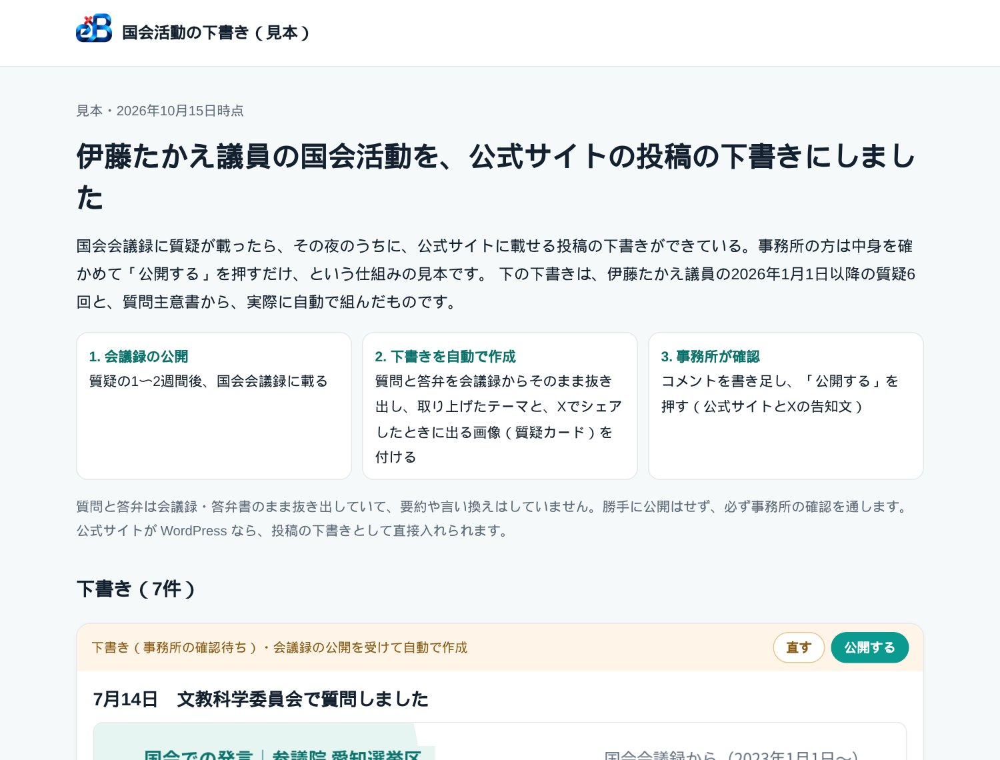
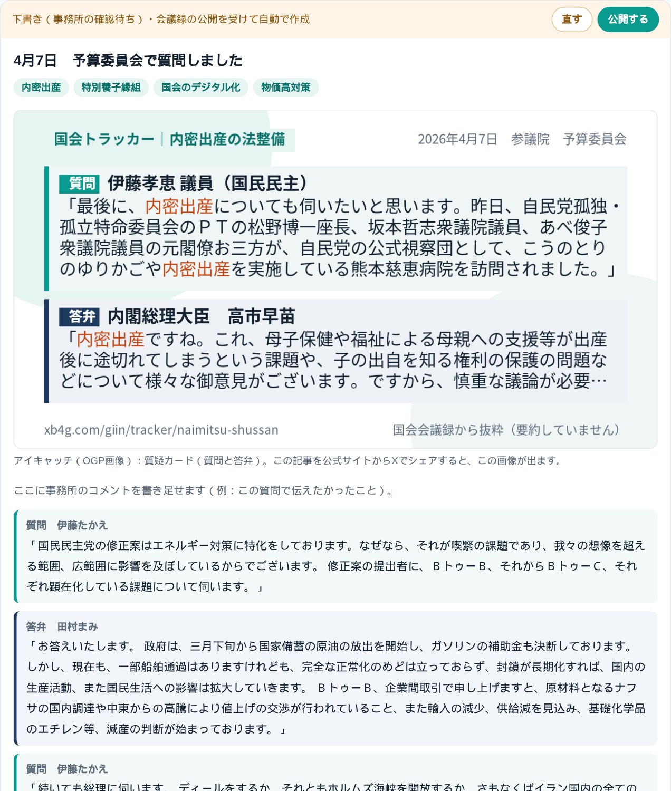
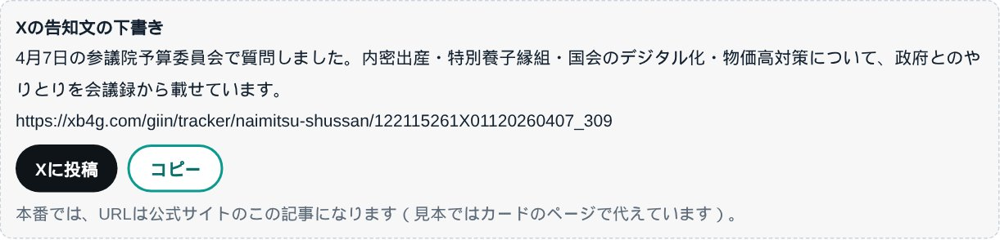
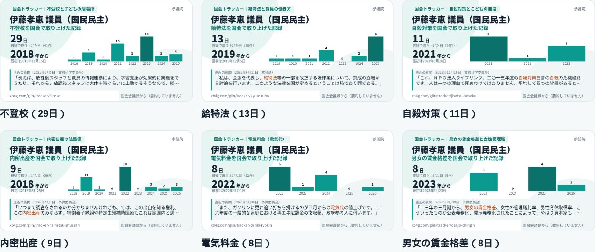

会議録が公開されたら、議員の公式サイトの投稿の下書きができている——伊藤たかえ議員の国会活動で見本を作りました
名古屋でAIシステム開発の会社をやっています。国会の会議録をテーマごとに集める「国会トラッカー」や、全国の国会議員が国会で何を話したかを引ける「国会議員 発言ログ」を作ってきました。今日はその材料を使って、議員事務所の仕事を1つ減らす仕組みの見本を作ったので、その話を書きます。

1. 議員の公式サイトの「活動報告」は、手で書いている
議員の公式サイトを見ると、多くの事務所が「◯月◯日 ◯◯委員会で質問しました」という報告を載せています。中身は、事務所の方がまとめた説明と、会議録のPDFや動画へのリンクです。質問主意書を出したときは、質問と政府の答弁書をPDFにして載せている事務所もあります。
これを毎回手で作るのは大変です。会議録は会議の1〜2週間あとに公開されるので、そこから質問の部分を探し、PDFにして、投稿を書いて、Xでも告知する。委員会で質問に立つ回数が多い議員ほど、報告が追いつかなくなります。
国会の会議録は、国立国会図書館の国会会議録検索システムからAPIで取れます。質問主意書と答弁書も、衆議院・参議院のサイトに載ります。当社はすでに、全国の国会議員711人の国会での発言を毎晩取り込み、質問主意書も毎日取り込み直しています。それなら、事務所が手で書く前に、下書きまで作っておけるはずだと考えました。
2. 作った見本：伊藤たかえ議員の2026年の国会活動
伊藤たかえ議員（参議院・愛知県選挙区・国民民主党）の、2026年の質疑6回と質問主意書1件で、公式サイトに載せる投稿の下書きを自動で組みました。

下書き1件ごとに入っているのは、次のものです。
- 題名：「4月7日 予算委員会で質問しました」のように、日付と委員会名から作ります。
- テーマの札：その日の質疑に出てくる語を、国会トラッカーのテーマと照らして付けます（4月7日なら内密出産・特別養子縁組など）。
- アイキャッチ（OGP画像）：その日の質疑が国会トラッカーにあれば、質問と答弁を1枚にした質疑カードを付けます。無ければ議員カードです。公式サイトの記事をXでシェアすると、この画像が出ます。
- 質問と答弁：議員の質問と、それに対する大臣や政府参考人の答弁を、会議録からそのまま抜き出して組にします。要約や言い換えはしていません。
- 事務所のコメント欄：「この質問で伝えたかったこと」を書き足す場所です。
- 出典：会議録へのリンクを必ず付けます。
質問主意書は、答弁書が届いたら、質問と答弁書の冒頭を並べた下書きを作ります。
3. Xの告知文と、投稿・コピーのボタン
下書きごとに、Xの告知文も作っています。「Xに投稿」を押すと告知文とURLが入った投稿画面が開き、「コピー」を押すと告知文とURLをまとめてコピーできます。

本番では、告知文のURLは公式サイトのその記事になります。記事のアイキャッチが質疑カードなので、Xに流れたときに、質問と答弁が1枚の画像で目に入ります。当社が議員の投稿に返信するときに使ってきた質疑カードと同じものを、議員ご本人の記事でも使える形です。
4. 公式サイトに貼れるカード
見本の最後には、伊藤議員が国会で取り上げてきたテーマごとに「何日・いつから取り上げてきたか」を1枚にしたカードを並べました。不登校（29日・2018年から）、給特法（13日）、自殺対策（11日）、内密出産（9日）などです。

政策紹介のページや、テーマごとの記事に貼れます。数字は会議録が増えるたびに新しくなるので、貼り替える手間もありません。カードの種類はOGP画像のカード8種類の一覧にまとめています。
5. 作るときに決めたこと
- 勝手に公開しない。 できるのは下書きまでです。公開するかどうかは、必ず事務所が決めます。
- 要約しない。 会議録と答弁書は、そのまま抜き出します。議員の言葉を当社やAIが言い換えると、意図と違う形で残るおそれがあるからです。説明は事務所が自分の言葉で書き足します。
- 出典を必ず付ける。 抜き出しには、会議録や答弁書へのリンクを付けます。
- 答弁した人を取り違えない。 答弁した官僚の方は国会議員の名簿にいないので、会議ごとに会議録の全文を取り直し、質問の直後の答弁を組にしています。委員長の進行の発言は飛ばします。
6. 議員事務所にご提案できること
見本は、いまは見るためのページです。実際にお使いいただくときは、事務所の公式サイトにつなげる形で作ります。
- 公式サイトへの下書き：公式サイトが WordPress なら、投稿の下書きとして直接入れる形にできます。会議録が公開された夜に下書きができていて、事務所は確かめて公開を押すだけです。
- テーマのトラッカー：議員が追っているテーマで、国会でだれが取り上げ、政府が何と答えてきたかを集め、毎晩新しくします。
- 質問主意書：衆参の質問主意書と答弁書を本文まで探せる質問主意書アシストとつなげ、答弁書が届いたら下書きにします。
- 発信用のカード：質疑カードや議員×テーマのカードを、Xや公式サイトにそのまま使えます。
当社では、議員事務所の住民相談や意見の集約など、日々の事務をAIで減らすご提案もしています。
ご自身の事務所でも見本を見てみたい、というご相談があれば、議員のお名前を教えていただければ同じ形で作ります。
よくある質問
どの議員でも作れますか？
いまの衆議院・参議院の議員全員（711人）について、2023年からの国会での発言を取り込んでいるので、どの議員でも同じ形の下書きを作れます。会議録に載っていない発言（会議録が未公開の会議など）は入りません。
公式サイトに勝手に投稿されることはありますか？
ありません。作るのは下書きまでで、公開は事務所が確かめてから行います。
質問や答弁を要約してくれますか？
しません。会議録と答弁書からそのまま抜き出します。議員の言葉を言い換えると意図と違う形で残るおそれがあるので、説明は事務所の方が書き足す形にしています。
公式サイトが WordPress でなくても使えますか？
WordPress なら投稿の下書きとして直接入れられます。ほかの仕組みの場合は、下書きを事務所の方がコピーして貼る形や、別の画面で確かめる形など、サイトに合わせてご相談します。